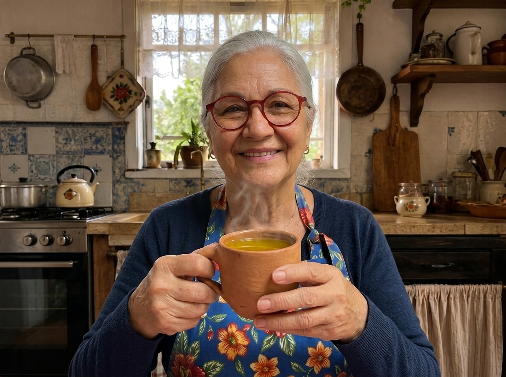
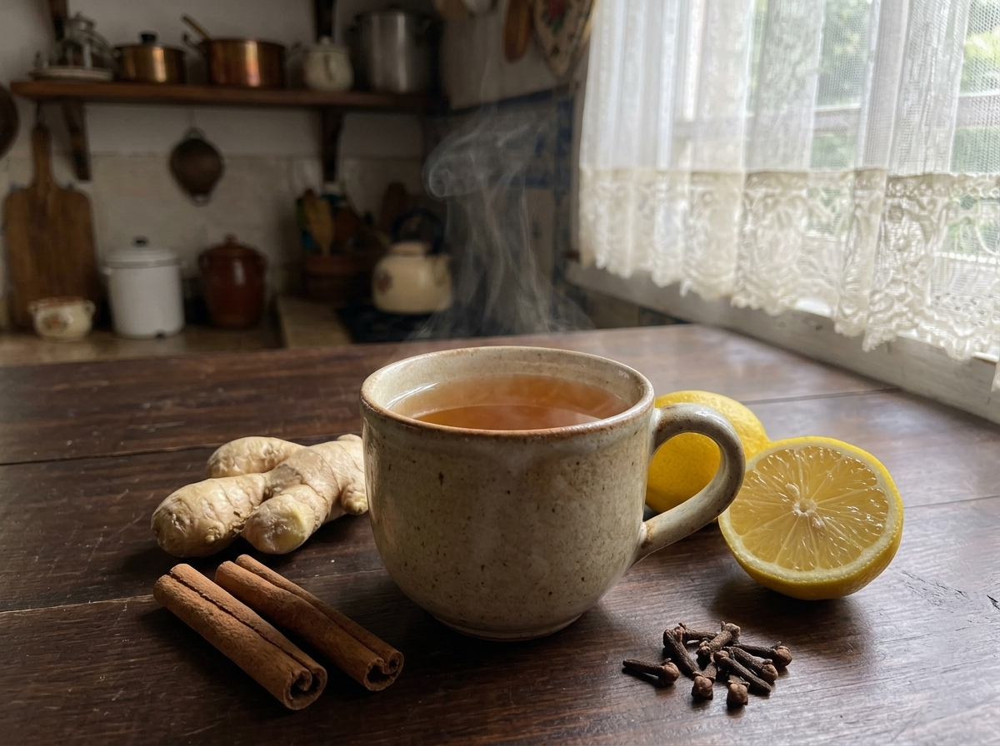
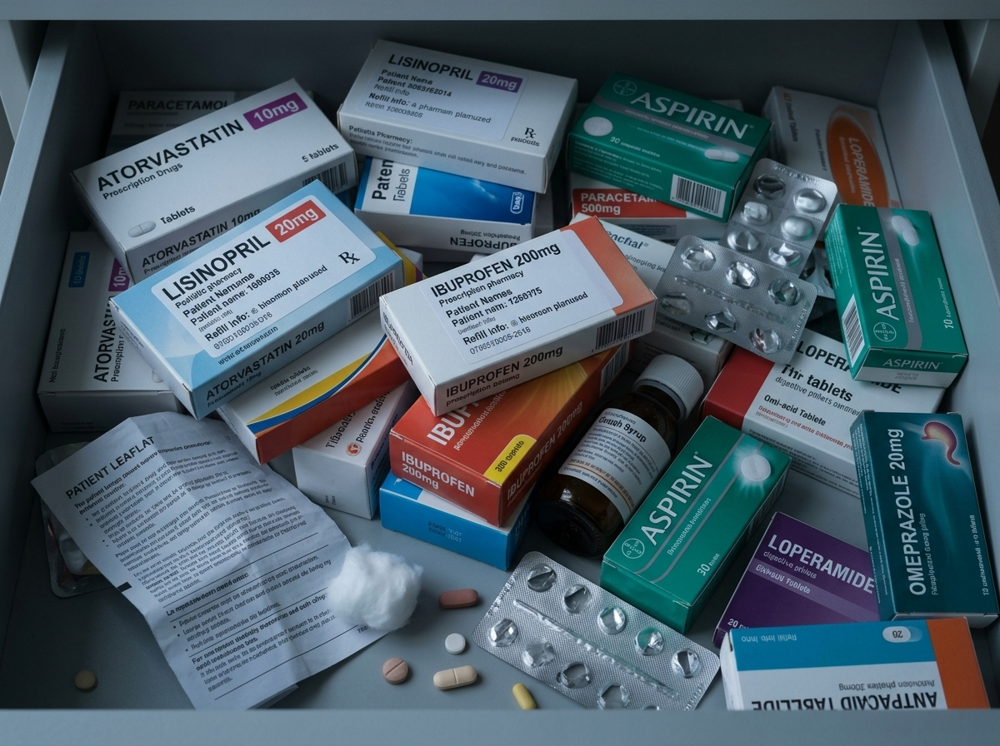

O Chá da Dona Sebastiana Que Ajuda a Desinchar o Fígado Gorduroso e Baixar a Glicose — Sem Dieta Difícil
Usado há décadas na roça, esse preparo simples ajuda a aliviar o inchaço do fígado e estabilizar o açúcar no sangue, quando feito do jeito certo.

Dona Sebastiana, com o chá que aprendeu ainda menina.
📋 O Caderno Fígado Leve da Dona Sebastiana
Aqui está o que você me pediu, minha filha. Pegue papel e caneta, ou tire um print da tela do celular para não esquecer:

Canela, cravo, cúrcuma e limão — o chá que abre o dia.
Logo ao acordar, ainda em jejum, prepare o Chá de Canela, Cúrcuma e Cravo.
*Esse gole ajuda a acordar o fígado e a diminuir a inflamação logo cedo.
Na hora do almoço, você não vai deixar de comer o seu arroz com feijão. Só vai mudar a ordem de colocar na boca:
*Isso impede que o açúcar suba rápido demais e sobrecarregue o fígado.
Hoje, jante no máximo até as 19h30, e prefira um prato leve — uma sopa de legumes com frango desfiado, ou uma salada com proteína.
Mas preste muita atenção aqui, minha amiga...
O chá da Dona Sebastiana é maravilhoso e ajuda muito nas primeiras horas. Mas preciso ser sincera: só o chá sozinho não faz milagre.
Se você toma o chá de manhã, mas continua cometendo os erros comuns ao longo do dia, o fígado vai continuar sofrendo.

Tudo isso acontece porque o fígado está sobrecarregado — trabalhando em dobro para limpar o excesso de glicose que entra do jeito errado no seu corpo.
O segredo não é O QUE você come, mas a ORDEM em que você come
Depois dos 50 anos, o metabolismo não é mais o mesmo de quando tínhamos 20. O corpo processa o açúcar mais devagar.
Comeu pão, arroz ou um doce logo no começo da refeição? O estômago digere rápido demais. O açúcar entra de uma vez na corrente sanguínea — é o chamado Pico de Glicose.
Para tirar esse açúcar do sangue, o corpo produz muita insulina, e o fígado é obrigado a transformar o excesso em gordura. É assim que surge a gordura no fígado e aquela barriguinha persistente.

Mas quando você usa a Sincronia Digestiva, tudo muda:
Resultado: você come o arroz, o feijão e até o docinho, mas a glicose não sobe de uma vez. O fígado fica em paz e começa a se desinflamar naturalmente.
Veja o que aconteceu com quem colocou a Sincronia Digestiva em prática
Eu tinha gordura no fígado grau 2 e sentia um cansaço que parecia que eu não tinha dormido nada. Comecei a fazer o sequenciamento dos alimentos e a tomar os goles de manhã. Duas semanas depois, a barriga estufada sumiu e meus exames de glicose melhoraram muito!
O que eu mais gostei é que não precisei cortar meu arroz e meu pãozinho. Só mudei o jeito de comer. A sensação de empanturrada depois do almoço acabou.

Por que funciona tão rápido?
O fígado é um órgão maravilhoso, com uma capacidade incrível de se regenerar. A partir do momento em que você para de jogar "combustível pesado" na ordem errada, ele começa a se limpar e a desinchar em poucos dias.
Talvez você esteja pensando...

Dona Sebastiana e as amigas, num fim de tarde qualquer.
Pois é, minha filha! Cortar tudo só te deixa triste, estressada e com fome. O problema não é o alimento em si, mas a ordem. Sem a Sincronia Digestiva, mesmo uma quantidade pequena de carboidrato vai direto para o fígado em forma de gordura.
De forma alguma! Você vai usar os alimentos que já compra na feira e no mercado perto de casa. Nada de ingredientes caros com nomes esquisitos — é comida simples de verdade.
Deus me livre! Comer bem é uma das maiores alegrias da vida. No método, você vai comer pratos saborosos, carnes gostosas, sopas nutritivas e até sobremesas preparadas do jeito certo.
O acesso ao guia custa menos do que uma caixinha de remédio para o fígado ou para diabetes. E o melhor: você vai economizar no mercado, comprando comida de verdade para toda a família.
O Método Fígado Leve
Para ajudar você a desinchar o fígado, recuperar a energia e controlar a glicose sem sofrimento, organizamos todo o passo a passo neste método:

📗 O Guia Completo Fígado Leve
(Baseado na Sincronia Digestiva)
Um manual prático, com letras grandes e leitura bem fácil, feito especialmente para quem já passou dos 50 anos e quer cuidar da saúde de forma simples.
E se você aproveitar hoje, recebe estes 4 presentes de graça:
Duas semanas de café da manhã, almoço e jantar fáceis e gostosos, para acelerar a limpeza do fígado.
Mais 7 preparados, chás e shots caseiros que ajudam a baixar o açúcar e tirar o inchaço da barriga.
Uma tabelinha para colar na porta da geladeira e saber o que comer primeiro nas refeições.
Um guia de 14 dias para acompanhar os seus sintomas sumindo, dia após dia.
Garantia incondicional de 7 dias
Confio tanto no que a roça me ensinou e na ciência da Sincronia Digestiva que o risco é todo meu. Entre hoje, leia o material, teste as receitas. Se não gostar, devolvo todo o seu dinheiro.